0 Aktuell: Sechskant
Sechskant (Mutter/Industrie) mit „AM“, der A-Querbalken ist eine Signalleitung. Momentan auf der Webseite.
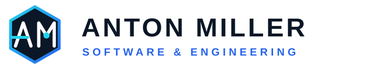
1 Code-Blitz
Spitze Klammern wie im Quellcode, der Schrägstrich ist ein Blitz: Software trifft Elektrotechnik.
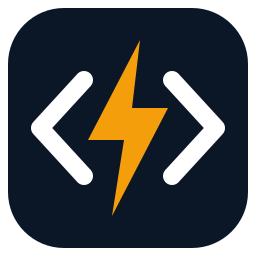
Favicon / App-Icon2 Rechtecksignal
Das „M“ ist ein digitales Rechtecksignal. Klar, modern und auch winzig als Favicon gut lesbar.
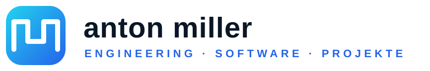
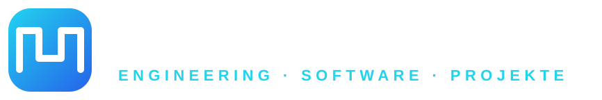
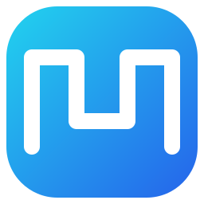
Favicon / App-Icon3 Motor & Signal
Zahnrad bzw. Rotor mit Sinuswelle darin: Antriebstechnik, Elektromotoren und Messtechnik.
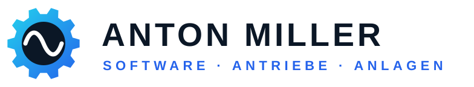
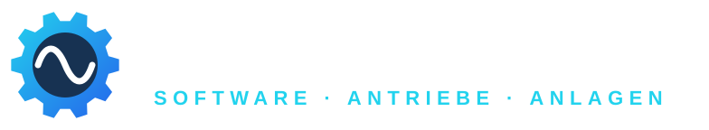
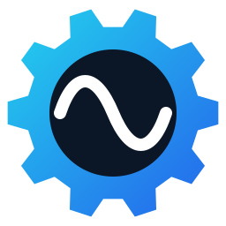
Favicon / App-Icon4 Leiterplatte
„AM“ als Leiterbahnen mit Lötpunkten, wie auf einer Platine: hardwarenah und technisch.
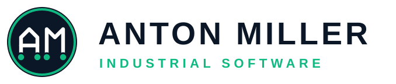
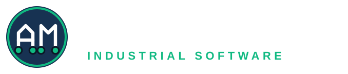
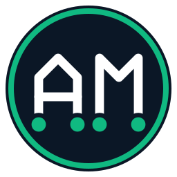
Favicon / App-Icon5 Klassisch / Seriös
Ruhiges Monogramm mit Akzentbalken (Fortschrittsbalken), steht auch für Projektleitung. Zeitlos, gut für Briefpapier.
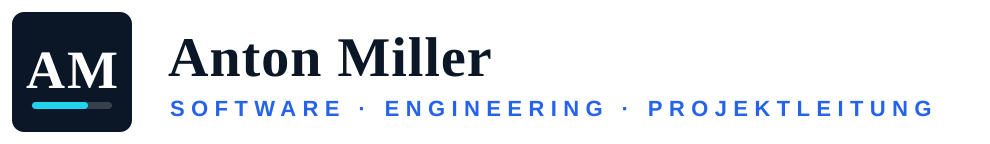
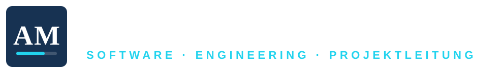
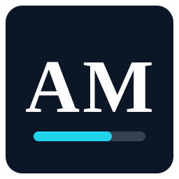
Favicon / App-Icon